实战版先驱 美服230延迟 无灌注 标准桩 稳定41k
请务必阅读全部取色要点
延迟230 锦鲤蛋糕 大师协调水晶 无灌注稳定41k
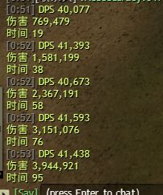
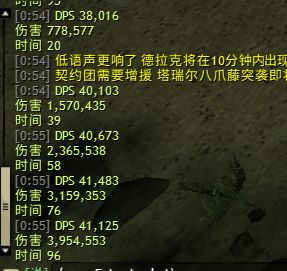
取色过程比较复杂，我会详细说明并且顺便说明目前遇到的一些问题以及解决方案
鲜血力量，瘟疫纹章，风险试剂，黑色=勇气试剂，痛苦浪潮，恶毒爆冲，不是黑色=毛伤害先驱帷幕，黑色=先驱帷幕|黑色=吞噬切割，不是黑色=黑暗弹幕，切割黑=黑暗弹幕，帷幕能量低=不是黑色=离开先驱帷幕，黑色=贪食跃冲，黑色=致命抽取，吞噬切割=2=离开先驱帷幕，吞噬黑暗，死亡束缚，手枪5黑=不是黑色=毛伤害先驱帷幕，手枪5黑=黑色=先驱帷幕，判断节杖=不是黑色=毛伤害先驱帷幕，判断节杖=黑色=先驱帷幕，孱弱之血，判断节杖=切手枪，黑色=勇气试剂，鲜血力量2，承诺试剂黑=风险试剂，承诺试剂，鲜血力量1，风险试剂，承诺试剂，恶毒爆冲，痛苦浪潮，重压崩溃，哀嚎射击，哀嚎射击=1=切节杖，普攻||
鲜血力量,7,850|瘟疫纹章,8|风险试剂,9,700|黑色|勇气试剂,0,700|痛苦浪潮,4,600|恶毒爆冲,3,600|不是黑色,,,,,,,,,ifnot|毛伤害先驱帷幕,f1,0,2,836|先驱帷幕,f1,0,3,500,2,836,5,700|吞噬切割,3,500,2,836|黑暗弹幕,2,836|切割黑|帷幕能量低,,,,,,,,,ifnot,,,,1,751,976,745,984,50,触发,0,,0,,50|离开先驱帷幕,f1,0,2,880|贪食跃冲,4,837,1,0,,,,,,,,,,,,,,,触发,1,8150|致命抽取,5,700|吞噬黑暗,3,607|死亡束缚,2,759|手枪5黑|判断节杖|孱弱之血,5,566|切手枪,`,200,2,820,,,,,,,,,,,,,,,触发,1,20000|鲜血力量2,7,850,8|承诺试剂黑|承诺试剂,6,700|鲜血力量1,7,850|怨恨纹章,9,637|重压崩溃,5,605|哀嚎射击,2,820|切节杖,`,150,3,607,2,759,,,,,,,,,,,,,触发,1,20000|普攻
[&DQgnNTI3QB/nGqIAgAAAAPUAAADUGgAA6BoAAAAAAAAAAAAAAAAAAAAAAAAENgBmAFYALwAA]
全套毒蛇 手枪 火炬 ，节杖 匕首 分别是恶魔 折磨 恶魔 大地
按键完全是默认按键，1-0 f1-f5 方便大家自行识别和调整跟随按键
全局延迟0.92
取色要点
鲜血力量 正常取色，鲜血力量1是取色鲜血力量的右上角2数字，鲜血力量2是取色鲜血力量右上角1，瘟疫纹章不在主循环内，只跟随鲜血力量2释放
取色中的 判断节杖和哀嚎射击=1是用来判断切武器是手枪切节杖还是节杖切手枪，这两种切武器跟随按键不一样，循环更流畅。判断节杖使用的是节杖4任意位置取色，节杖4不在循环可以很好的识别目前武器组
承诺试剂黑=风险试剂 这个识别是为了解决两个试剂释放卡住 导致鲜血力量不能正常传染
"切割黑"取色为帷幕3技能 7点钟黑色，同时帷幕2技能取色位置可以稍微向左一些，防止帷幕3因为位移太远导致帷幕2的跟随按键没有释放,那么此时可以用主循环补充，而帷幕3正常释放的时候，则确保帷幕2会等帷幕3的cd转好
帷幕4有一个内置8150ms的cd，是为了顺畅打出4 3 2的帷幕收尾循环，这个数值会被全局cd影响，因此当你调整全局延迟的时候，这个延迟要相应变动，当你调低全局时，需要调高这个延迟，如果不调整这个延迟，那么帷幕4会提前释放，但是影响不大。只不过是将普攻穿插到4和3之间，当你调高全局延迟时，这个数值要调低，如果不调整这个延迟，你的帷幕4在帷幕3好了之后依然不会释放，这个影响很大，一定要调整
实战操作取色重点
可以看到取色中有很多 “黑色”和“不是黑色”,我奇思妙想中，想到了可以通过某一个点的特殊取色是否识别来切换先驱循环是正常循环还是毛伤害循环。
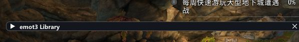
我在这个位置放置了我常用的一个表情快捷键插件，并且通过shift按键进行显示和隐藏，当隐藏时，这个位置就没有这个条框。
因此，取色中的“黑色”就是这个条框的黑色，“不是黑色”则为这个颜色的反色。那么我就可以通过shift控制宏识别是黑色还是不是黑色
因此，在我的循环中，当你控制出现这个插件的条框则为 “黑色”那么此时是正常循环，当按下shift的时候 插件隐藏，宏识别为”不是黑色“，那么此时勇气试剂不会释放，进帷幕则使用“毛伤害先驱帷幕”此时不会释放3 4 5技能，当你在任何时刻按shift 显示插件条框的时候，勇气试剂，帷幕 3 4 5会正常释放，其中的“帷幕能量低=不是黑色=离开先驱帷幕”中的“能量低”则范围取色帷幕i条靠左部分一点点方框，取色则为帷幕条绿色的反色，模糊度50（我用50是正常的,你们可以自行调整），这时候在某些长时间远程毛伤害场景可以自动保存部分能量，防止下次正常输出帷幕能量不够完整循环。
实测即使在频繁移动并且躲机制的德斯米娜挑战，通过此种办法启停控制这些位移技能的释放 完美的避开镰刀和火墙，同时输出有保证，可以全自动毛伤害，一键切换正常模式，在全程不停止宏，只控制插件显示和隐藏，不刻意转症状的情况下，甚至可以做到41k的输出
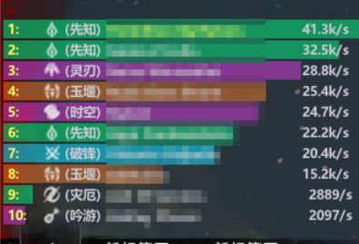
图中为美服野队德斯米娜挑战，无灌注，先驱宏实战面对多动症的boss比较难受（手打我不知道打多动症是什么效果），虽然能打这么高输出必然是转移的很多症状，但是也可以看出通过切换正常循环和毛输出模式可以大大提高实战的泛用性
如果你实在不想使用毛伤害版本或者黑色 不是黑色 取色根本看不懂，下面是没有毛伤害的版本
鲜血力量，瘟疫纹章，风险试剂，勇气试剂，痛苦浪潮，恶毒爆冲，先驱帷幕|吞噬切割，切割黑=黑暗弹幕，贪食跃冲，致命抽取，吞噬切割=2=离开先驱帷幕，吞噬黑暗，死亡束缚，手枪5黑=先驱帷幕，判断节杖=先驱帷幕，孱弱之血，判断节杖=切手枪，勇气试剂，鲜血力量2，承诺试剂黑=风险试剂，承诺试剂，鲜血力量1，风险试剂，承诺试剂，恶毒爆冲，痛苦浪潮，重压崩溃，哀嚎射击，哀嚎射击=1=切节杖，普攻||
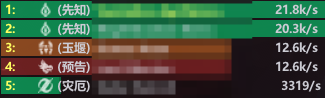 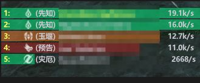 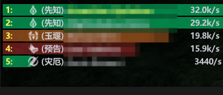 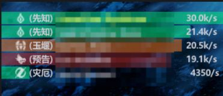 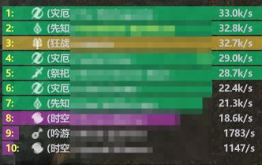 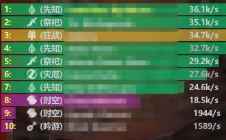
取色中可能遇到的问题
1.“为什么先放瘟疫纹章 再用的第二次鲜血“
原因是瘟疫纹章是鲜血力量跟随按键，出现这种情况一般是瓶子的延迟太低，导致瓶子还没有释放完毕就释放鲜血力量二段，但此时鲜血力量并没有放出来，但是跟随按键瘟疫纹章释放出来了，提高一下三个瓶子的延迟即可
2.”为什么起手要打完整套武器和通用技能组才能进入帷幕“
起手循环的取色判断是从按下启动的瞬间 一次性把起手循环内技能全部判断的，即起手只读取一次，也就是你按下的时候，如果技能没好就不会放，而是直接跳到主循环。那么不进帷幕很可能是你毛了伤害，按下宏的瞬间宏识别的 你的f1是cd状态，即使你瓶子和枪23打完之后f1cd好了 也不会进入帷幕，而是直接进入主循环了，解决方法就是启动的时候确保f1是可以进入的状态。或者你单独给起手写一个特殊的f1 取色是取7点钟cd好的状态，此时f1虽然cd没好，但是识别为可以按下，那么当前面的起手打完，f1cd已经转好，则可进入f1，但是这种方法不推荐，实测会影响实战启停.
如果你有任何取色问题不懂，或者遇到了任何问题需要询问，麻烦详细说明你做了哪些改动，我会尽快回复
补几个碎层挑战玩玩的结算，三无且无称号，我不是碎层玩家，而且老外尤其是奶的平均水平对比国内简直是灾难，就是看看玩玩参考参考就行了
（这次的奶极其垃圾，玩的还不是吟游，体验极差，导致站桩输出机会不多）
99cm
98cm光（6%血没打死转阶段了，我都气笑了）
98cm暗
95cm
提一嘴，没打过我的先驱是吃了药的冠军，这你绷得住吗
补充实战结算
普通迪西马
普通厄拉
格里尔不放了，垃圾老外奶妈不放稳固输出没法看
评论列表（80）
能贴一个，不带黑色的循环吗（带延迟的），谢谢啦，搞了一下午，dps上不去，谢谢啦，哈哈
@玄风嘎嘎嘎 现在已经砍了 上不去正常 鲜血力量，瘟疫纹章，风险试剂，勇气试剂，痛苦浪潮，恶毒爆冲，先驱帷幕|吞噬切割，切割黑=黑暗弹幕，贪食跃冲，致命抽取，吞噬切割=2=离开先驱帷幕，吞噬黑暗，死亡束缚，手枪5黑=先驱帷幕，判断节杖=先驱帷幕，孱弱之血，判断节杖=切手枪，勇气试剂，鲜血力量2，承诺试剂黑=风险试剂，承诺试剂，鲜血力量1，风险试剂，承诺试剂，恶毒爆冲，痛苦浪潮，重压崩溃，哀嚎射击，哀嚎射击=1=切节杖，普攻||
求问，如果改成国服，延迟要怎么设置？
@求问 这个不清楚，你只能是自己调整保证在不打断技能的前提下 尽量减少切包之间穿插普攻的概率
@kpd 我是指 切帷幕
欧服延迟145左右0灌注无食物扳手最高只能打33 34k左右，技能释放顺序都没问题，全局延迟也试了个遍不知道差在哪里了
@xxx 我也是，只能到34k
贪食跃冲,4,837,1,0,,,,,,,,,,,,,,,触发,1,8150 想问下这个具体含义是什么
@冷风 如果你指的是这个跟随1的话 是让你自动回头，因为如果你把鼠标放在血条上让4技能原地跳的话，他朝向会改变180度
判断节杖是取色什么啊大佬
@1 节杖4任意位置
起手手枪 进入帷幕打完 出来不放手枪火炬技能怎么办 有时候会放，但基本会卡在循环中段，帷幕切出来就不会放手枪技能了
@时钟 微调出帷幕的延迟高一些，然后 全局延迟调高点
@kpd 尝试了 没有用
@kpd 准确来说是出帷幕放个手枪3之后，左边技能就不放了，经常出现这个情况
@时钟 这个 真不清楚，因为左边技能没有判断逻辑，就是按顺序好了就放，这个 只能说是 取色问题？
@时钟 我用的没有毛伤害的版本，而且打的过程中也不会切节杖
@时钟 鼠标点击聊天栏，看持续输出什么按键，说明你这个按键取色错了，导致持续在触发，无法执行后续判断。
@melis 谢谢。这个我回去检查下，应该是这个问题
测试了一下 还是可以的 就是有一个问题 第一次进帷幕是先放3的，等第二次进帷幕不再是先帷幕3245了 变成先2导致变成2534了 这个是什么问题呢
@13357570423 这个 不是很清楚，如果你能发个视频 就更好了
@13357570423 进入帷幕，固定绑定帷幕2，每次进帷幕优先按2就行，进入帷幕150毫秒，最低120，不能更低，其他几个帷幕技能就按照先后排序，识别到哪个就先放。
@melis 怎么固定绑定帷幕2呢
@13357570423 F1 150 跟随2 550
起手手枪 进入帷幕打完 出来不放手机火炬技能 右边没问题 鲜血力量第二次也是你说的 等文章放完了 又放了一次鲜血 不切节涨怎么回事
@melis 哥，加个快捷键，按下快捷键的时候执行多动症BOSS的循环， 不按快捷键的时候执行正常木桩循环
@明月仲秋 @melis 或者在1个循环下，增设，123套副循环，根据实际输出环境，自己手动切换
@明月仲秋 这个不会加，需求不大
有一次的匕首5打不出去，，就是匕首5，切两次手枪，只能打出去一次
@明月仲秋 调一下匕首5延迟就可以了
@kpd 不是匕首5延迟问题，，是匕首5的位置问题
@明月仲秋 你指的是新循环手枪切节杖 要打匕首5吗，那是这样的 ，我没更新 新的45ik的循环
第2次鲜血力量转移不出去，老是 第一次鲜血，然后就瘟疫纹章，
@明月仲秋 取色问题，鲜血力量1取右上角2，鲜血力量2取右上角1
@kpd 取色没问题，2和1的取色不一样，这是我改的
鲜血力量，瘟疫纹章，风险试剂，勇气试剂，痛苦浪潮，恶毒爆冲，先驱帷幕|吞噬切割，切割黑=黑暗弹幕，贪食跃冲，致命抽取，吞噬切割=2=离开先驱帷幕，吞噬黑暗，死亡束缚，孱弱之血，手枪5黑=先驱帷幕，判断节杖=先驱帷幕，判断节杖=切手枪，勇气试剂，鲜血力量2，承诺试剂黑=风险试剂，承诺试剂，鲜血力量1，风险试剂，承诺试剂，恶毒爆冲，痛苦浪潮，重压崩溃，哀嚎射击，哀嚎射击=1=切节杖，普攻||
鲜血力量,c,850|瘟疫纹章,x|风险试剂,v,700|勇气试剂,1,700|痛苦浪潮,q,600|恶毒爆冲,e,600|先驱帷幕,b,0,e,500,f,836,t,700|吞噬切割,e,500,f,836|切割黑|黑暗弹幕,f,836|贪食跃冲,q,837,r,0,,,,,,,,,,,,,,,触发,1,8150|致命抽取,t,700|离开先驱帷幕,b,0,f,880|吞噬黑暗,e,607|死亡束缚,f,759|孱弱之血,t,600|手枪5黑|判断节杖|切手枪,l,200,f,830,,,,,,,,,,,,,,,触发,1,20000|鲜血力量2,c,850|承诺试剂黑|承诺试剂,z,700|鲜血力量1,c,850,x|重压崩溃,t,605|哀嚎射击,f,830|切节杖,l,150,e,607,f,759,,,,,,,,,,,,,触发,1,20000|普攻,r
@明月仲秋 适合自己就可以
@明月仲秋 每次进帷幕技能是2543 是这样么
不切武器是啥情况，大佬
@大萨达 应该是你设置的延迟有问题，打不完武器技能就进帷幕了
范围取色怎么去，大佬
@11 范围取色帷幕一半位置的左边，然后取色黑色，识别到黑色就退出，给个50模糊度
黑色，不是黑色，毛伤害先驱帷幕，帷幕能量低，这4个怎么取色啊？
大佬，吞噬切割=2=离开先驱帷幕，这个2是什么意思
@大佬 打两次帷幕3退出帷幕，你不用管，不需要取色，这是自由宏的机制
@kpd 谢谢大佬
@kpd 谢谢大佬
Nezus出了一个插件，便捷自身脚下释放技能，这个功能可以开发一下，很好用
@流沙 我知道，但是对于习惯按住右键的人来说 不好用，所以我没整，我都是鼠标放地图上的
让先驱再次伟大
帷幕里面的正确循环，应该先3 在2 吗？ 要怎么取色啊？ 我现在在帷幕里面 技能2 CD先好，先打的2 在打3 的。
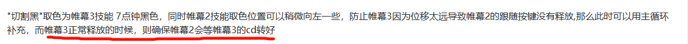
@yaiba5530 切割黑 你取色取的是哪个位置
@kpd 大概就是7点位置
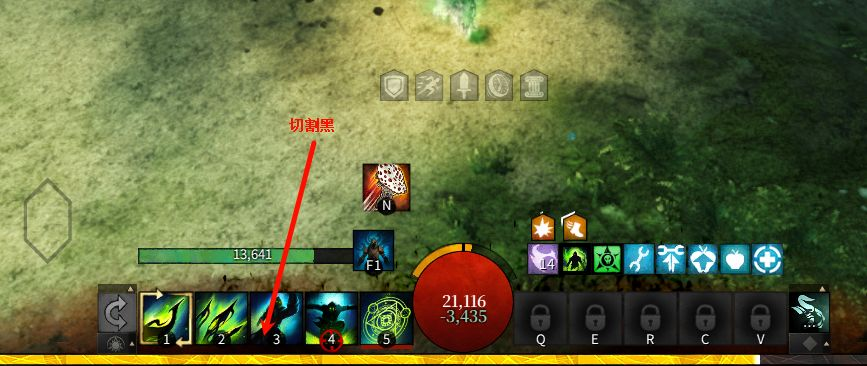
@yaiba5530 这个取色要取黑色的，你是取色的黑色吗，如果实在不行，你就把切割黑=帷幕3直接删掉 试试
@kpd 刚进入帷幕的第一次循环是3,2,5,4，后面是2的CD先好打的2 ，然后3技能
@小o 大佬 多少灌注
打桩14灌注42k今天厄拉日常40k
@小o 你用过这个自动毛伤害吗 效果咋样
@kpd 厄拉没用过鼠标放在血条那就原地跳
老大，有没有正常循环的，就是不要毛伤部分，“黑色”，“不是黑色”实在理解不了
@CC 鲜血力量，瘟疫纹章，风险试剂，勇气试剂，痛苦浪潮，恶毒爆冲，先驱帷幕|吞噬切割，切割黑=黑暗弹幕，贪食跃冲，致命抽取，吞噬切割=2=离开先驱帷幕，吞噬黑暗，死亡束缚，手枪5黑=先驱帷幕，判断节杖=先驱帷幕，孱弱之血，判断节杖=切手枪，勇气试剂，鲜血力量2，承诺试剂黑=风险试剂，承诺试剂，鲜血力量1，风险试剂，承诺试剂，恶毒爆冲，痛苦浪潮，重压崩溃，哀嚎射击，哀嚎射击=1=切节杖，普攻||
帷幕能量低怎么取色，黑色和不是黑色的插件是啥
@小o 帷幕能量低是范围取色，范围是中间左边一点的帷幕条，取色是帷幕绿色的反色，这样在这合格范围内没识别到绿色就自动退出帷幕，插件你自己随便选，只要是能一个按键影响某个位置的颜色的插件都行
我玩这玩意有阴影了，帷幕一个跳过去，暴毙。20瘟疫下，命都是奶妈赐予的。
很强，解决了毛伤害，位移的问题，感谢大佬
报这个错误是啥原因啊
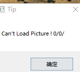
@yewei 额 找到原因，有个范围取色的没取色
@yewei 解决了就行
@kpd 伤害确实顶，就是我打桩的时候剩桩剩20血的时候经常倒地，自身症状掉血倒地
@yewe 这就是我说的，你先打的纹章 再打的鲜血力量，你根据我说的 调整下延迟
@kpd 一会再上线研究下
@kpd 大佬你好，我也有这个问题。请问这个情况下是调整鲜血力量2还是鲜血力量1的延迟呢？我试了一下，调整2，从850改到1200还是不行
@1 成功啦，缩短1的延迟，850改到600就好了！！！
@kpd 还是不稳定，我估计是2和1的取色问题，放完第一段鲜血力量后，不会立即放第二段
@1 本身就不会立刻放第二段，因为有内置cd ，最优解就是放了一段 再扔个瓶子，才放第二段，然后瘟疫纹章
@1 一般来说，鲜血力量延迟不用调整，主要是调整瓶子的延迟，也就是说，要确保瓶子扔完之后的鲜血力量2可以正常释放并带出瘟疫纹章，如果瓶子延迟低了，就导致提前放鲜血力量二段，导致鲜血力量没用出来但是瘟疫纹章跟随按键按出来了
这么6吗，大佬好强 打桩还可以 就是实战有点烦 容易跳出去丢伤害
@让天苛刻 你可以试试，我这两天不停的测试，什么德姆大招 德斯米娜，98挑战 顺畅的不行，自动毛伤害，不怕位移冲上去，感觉我自己手打和这个宏的唯一差别可能就是我会手操节杖2扔boss，宏不好判断，但是我开了宏之后真的连脑子都不想动了，直接把鼠标放在自己脚底下然后悠闲走为，boss跑了就按一下shift 哈哈哈
@kpd 我觉得后面更新可以加一个全局判断，全局条件符合，才执行起手+主循环的条件，跟指定循环类似。
@melis 能整个距离判断就无敌了，真彻底开了宏不用关了